202202151256 Заполнение экрана Выбора Карт
Продолжаем разбираться в этапе Получения Информации о картах Игры.
На прошлом этапе мы получили maps.json, сейчас нам нужно отобразить информацию о картах на странице в виде карточек.
Находим верстку карточки
- Рассмотрим
index.htmlи найдем HTML-код одной карточки, а также найдем какую информацию нам нужно туда подставить. В нашем случае, это картинка (src) и название карты (в нескольких местах):
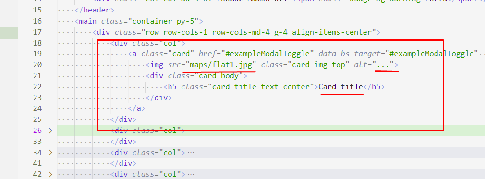
- В HTML-коде карточки есть часть непонятных атрибутов, которые нам вроде как и не нужны. Верстальщик спешил и просто копировал верстку с BootStrap-а. Поэтому мы можем пока убрать её:
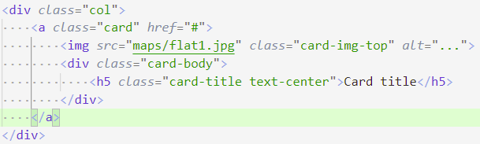
- На самом деле, мы убрали HTML-аттрибуты для работы с модальным окном в BootStrap. Мы его будем делать по-другому, но и с модальными окнами BootStrap было бы неплохо разобраться.
Создаем функцию по генерации HTML-кода одной карточки
-
Возьмем HTML-верстку одной карточки, и создадим в файле
script.jsфункцию, которая из объекта возвращает строку-HTML верстку:Обратите внимание! Мы использовали многострочные строки с обратной кавычкой (`), которая располагается под буквой
ё.
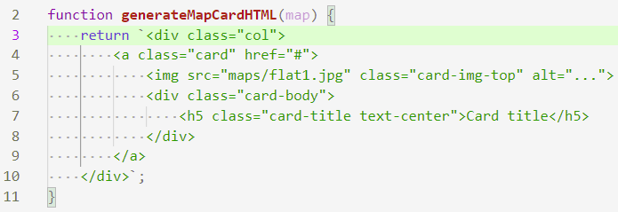
- Проверим в консоли Браузера, что функция работает:
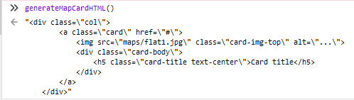
- Теперь воспользуемся особенностью многострочных строк JavaScript - интерполяцией. Для этого внутри строки используем синтаксис
${VariableName}:
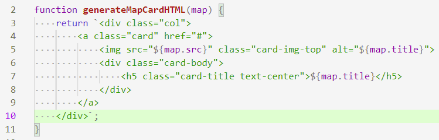
- Проверяем в консоли, что значения подставляются:
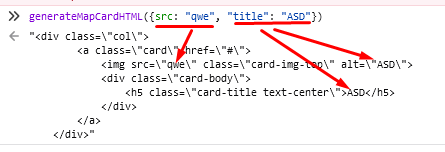
- Можем несколько упростить код, воспользовавшись Деструктуризацией аргументов функций:
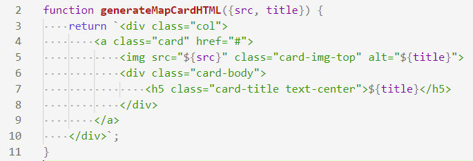
- Не забываем проверить, что ничего не сломалось и все работает также
Генерирование списка HTML-карточек
-
Теперь сделаем функцию, которая принимает массив карт и возвращает HTML-верстку для всего массива.
-
Это можно сделать с помощью написанной нами ранее функции
generateMapCardHTML()и JavaScript-циклов:
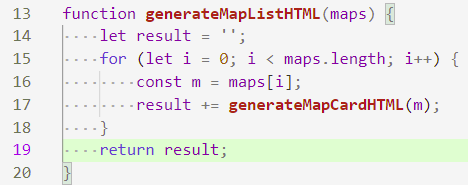
- Попробуем в консоли разработчика, убедившись что все работает:
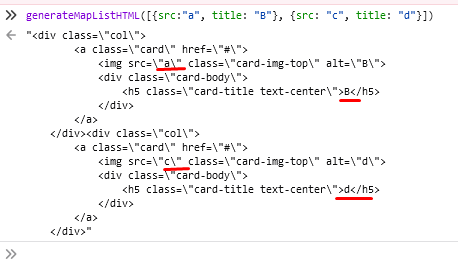
- Так же, можем сократить код используя JS-метод массива
.map(), который принимает функцию и применяет к каждому элементу массива эту функцию. После массив HTML-карточек можно соединить с помощью метода массива.join(""):
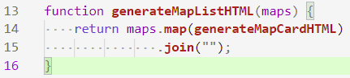
- Не забываем проверить, что ничего не сломалось и все работает также
Размещение списка HTML-карточек на Экране Выбора Карт
-
Сгенерировав HTML-код списка карточек нам осталось вставить его в документ.
-
Для начала найдем в
index.html, где были захардкожены эти карточки. Больше нам они особо нам не нужны, поэтому можем их удалить (или закомментировать), и чтобы найти HTML-элемент куда будем добавлять список, обозначим его классомchoose-map-screen:
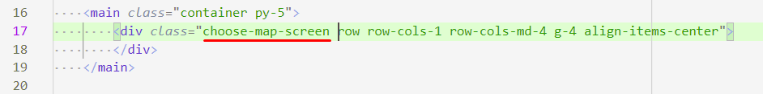
- С помощью метода
document.querySelector()найдем наш HTML-элемент в нашем JS-файле. Чтобы проверить что он нашелся и не равенnull(так будет если мы где-то опечатались и.querySelector()не смог найти элемент), мы добавим ключевое словоdebugger. Увидев его, отладчик остановит нашу программу именно на этом месте, и мы сможем проверить значение переменной:
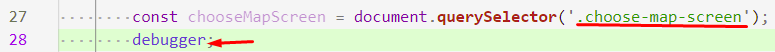
- Проверяем в Инструментах разработчика:
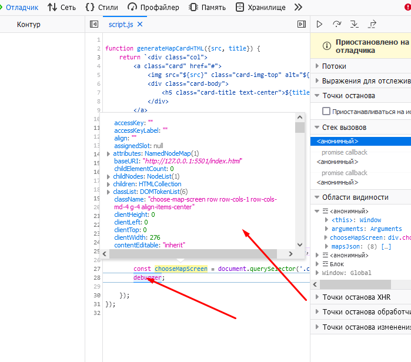
- Отлично, осталось добавить в
.innerHTMLнаш сгенерированный HTML:
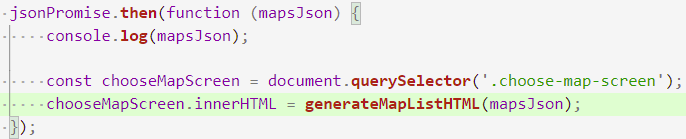
- Проверяем в браузере, что все работает:
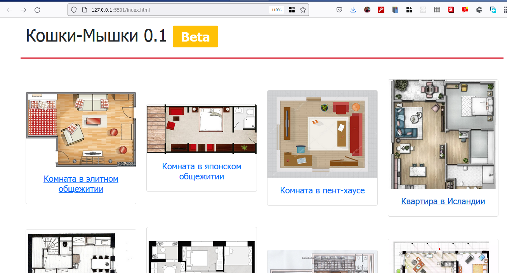